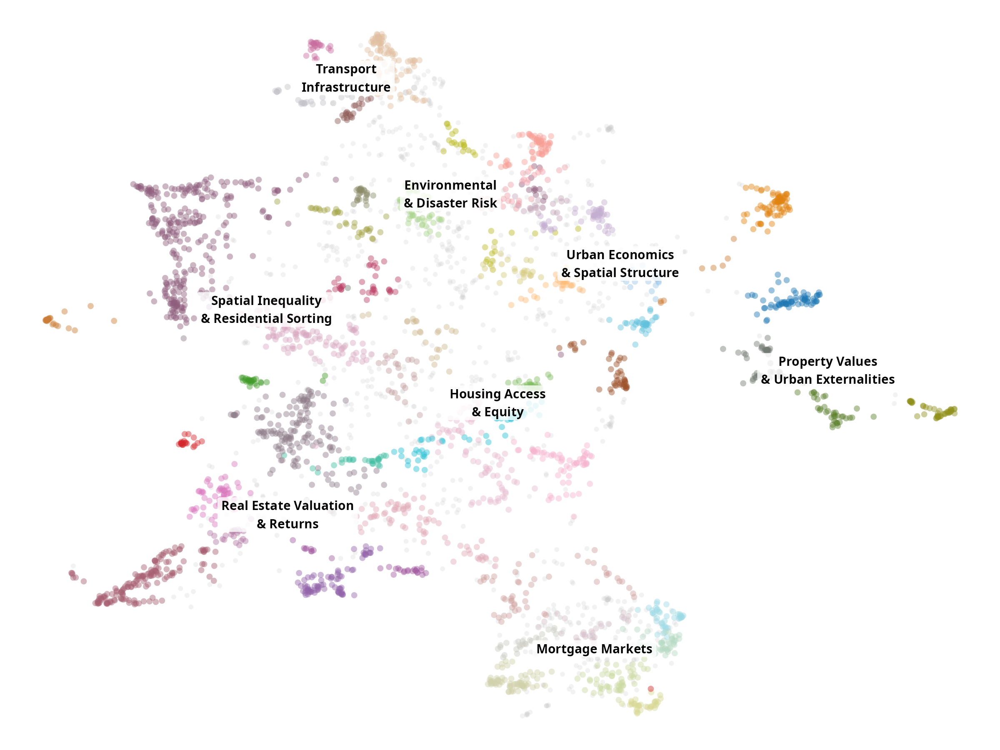
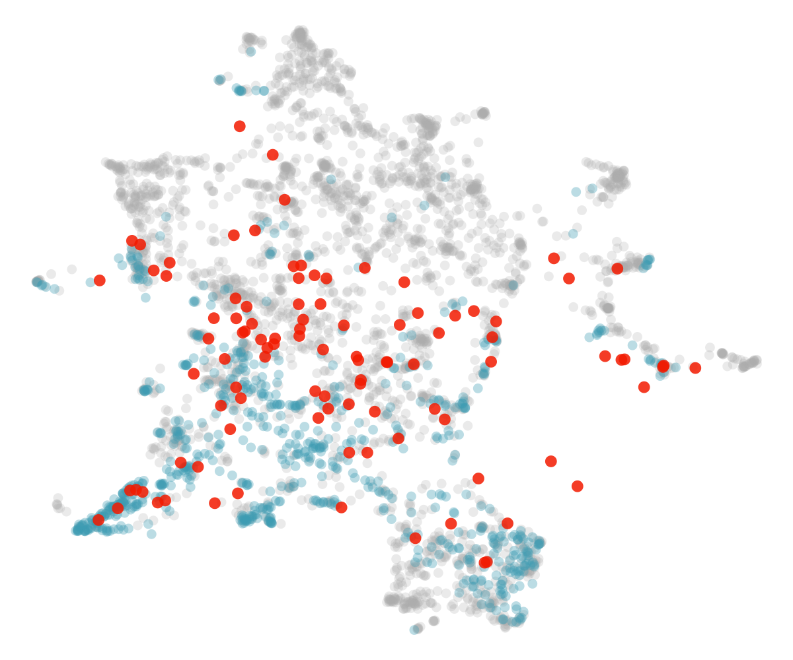
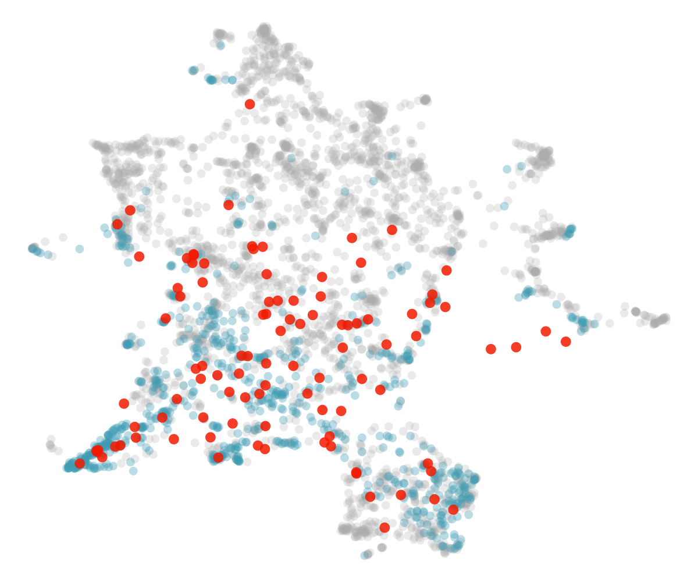
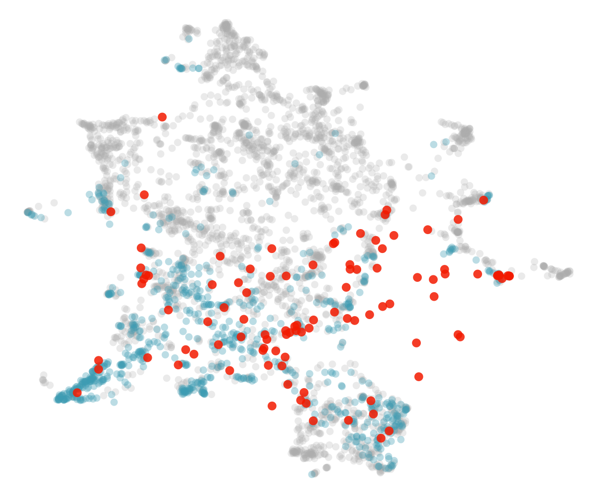
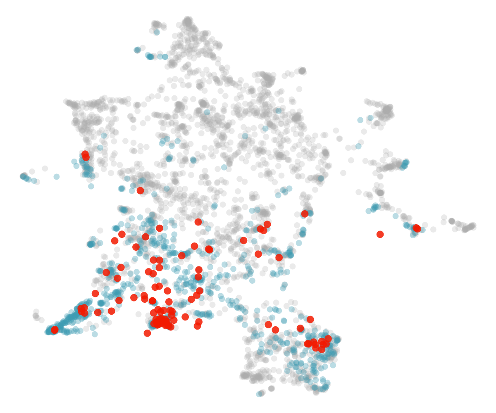
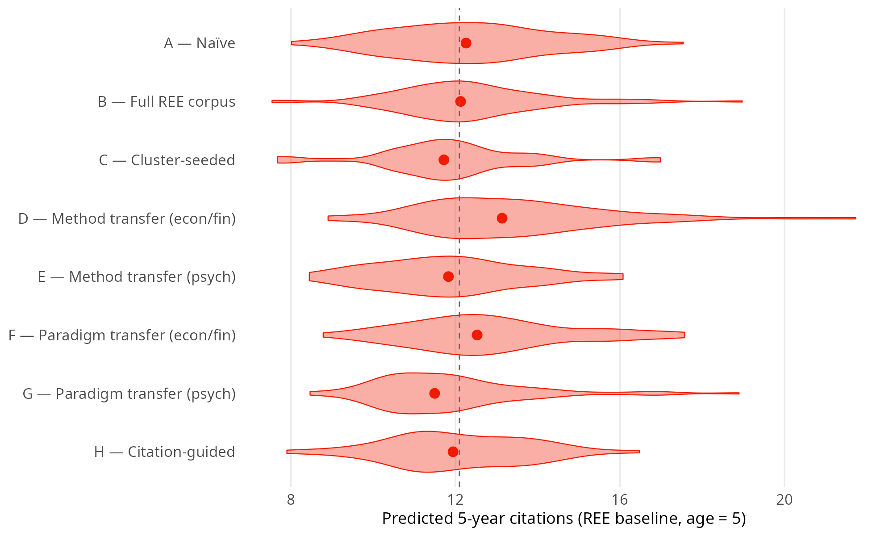

Thies Lindenthal · University of Cambridge · 2026
Comparison of Core Research Competencies (my self-perception)


A: Naïve generation, based on LLM training only
B: Full REE corpus provided as context
C: Transfer of research methods and ideas from Econ/Finance
D: Transfer of research methods and ideas from Psychology| Condition | Clusters | HHI | Atypicality | Periph./REE | NN dist./REE | Pred. cit. |
|---|---|---|---|---|---|---|
| A — Naïve | 21 / 51 | 0.070 | 0.726 ± 0.180 | 3.16 | 2.57 | 11.9 |
| B — Full REE corpus | 23 / 51 | 0.074 | 0.707 ± 0.248 | 2.75 | 2.48 | 11.9 |
| C — Cluster-seeded | 31 / 51 | 0.043 | 0.720 ± 0.206 | 2.89 | 2.48 | 11.5 |
| D — Method transfer (econ/fin) | 25 / 51 | 0.089 | 0.735 ± 0.147 | 3.70 | 2.19 | 13.4 |
| E — Method transfer (psych) | 21 / 51 | 0.112 | 0.693 ± 0.210 | 1.85 | 2.70 | 11.2 |
| F — Paradigm transfer (econ/fin) | 23 / 51 | 0.080 | 0.735 ± 0.158 | 4.36 | 2.21 | 13.1 |
| G — Paradigm transfer (psych) | 15 / 51 | 0.161 | 0.632 ± 0.251 | 1.74 | 2.67 | 11.2 |
| H — Citation-guided | 27 / 51 | 0.066 | 0.729 ± 0.179 | 2.80 | 2.36 | 12.5 |

\( log(1 + Citations_i) = \alpha + \beta_1\log(Age_i) + \beta_2 Atypicality_i + \beta_3 NN.dist_i + \beta_4 log(frontier.dist_i) \)
\( + \beta_5 cluster.mean.cit_i + Journal.FE_i +\epsilon_i \)
\(R^2 = 0.182\); \(n = 1,074\); evaluated at REE baseline, age = 5